Introduction
Welcome! In this tutorial, you’ll learn how to measure and interpret the strength of linear relationships between two variables using correlation coefficients.
Learning Objectives:
- Calculate and interpret correlation coefficients
- Recognize when correlation is appropriate (and when it’s not)
- Distinguish between correlation and causation
- Identify spurious correlations
Strength of bivariate relationships
Correlation
Correlation quantifies what we see visually in scatterplots. Remember examining scatterplots in the previous lesson? Now we’ll attach specific numbers to those patterns.
The correlation coefficient (denoted as r and \(\rho\)) measures:
- Direction (sign): Positive or negative relationship (shown by the sign)
- Strength (magnitude): How closely points follow a linear pattern (shown by the magnitude)
Key properties:
- Always between -1 and 1
- Values near 0 indicate weak/no linear relationships
- Values near ±1 indicate strong linear relationships
Visualizing Different Correlations
As you view these examples, notice how the “tightness” of the point cloud changes as correlation values change. Try to develop intuition for what different correlation values look like.
Near perfect correlation
A correlation coefficient of close to 1 indicates near-perfect positive correlation, as we see in this plot.
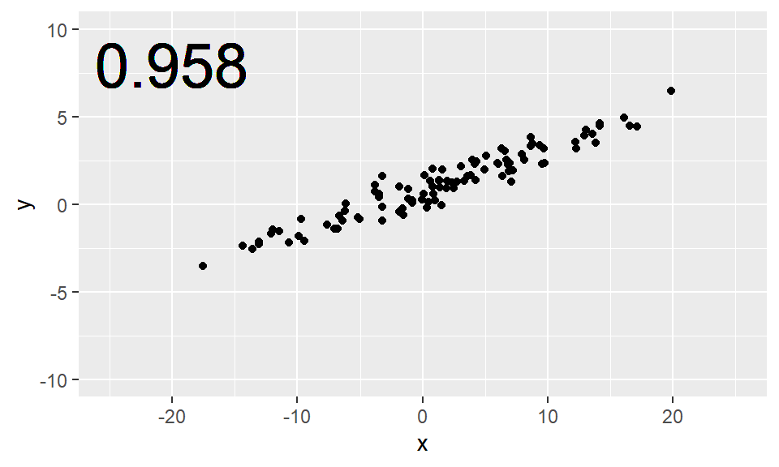
Strong
For scatterplots in which the points are more spread out, the value of the correlation coefficient is lower. Here we see a scatterplot with correlation that we might call “strong.”
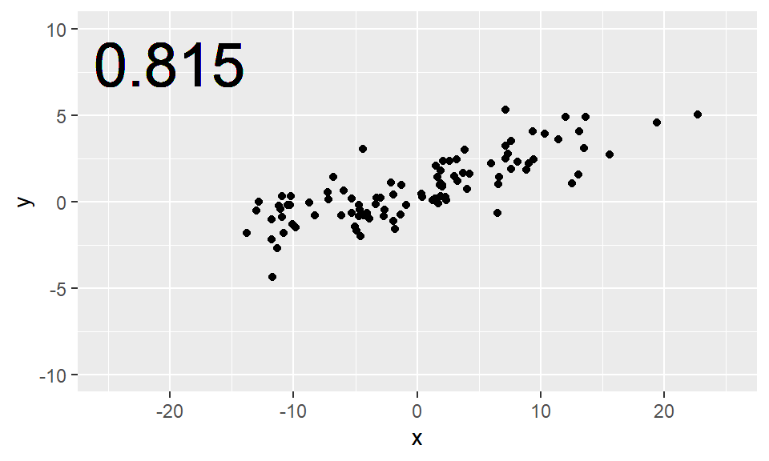
Moderate
Values of the correlation coefficient that are closer to 0.5 might be considered “moderate”…
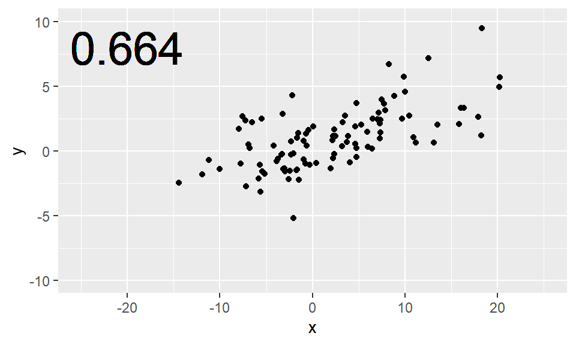
Weak
…while values of the correlation coefficient closer to 0.2 might be considered “weak.”
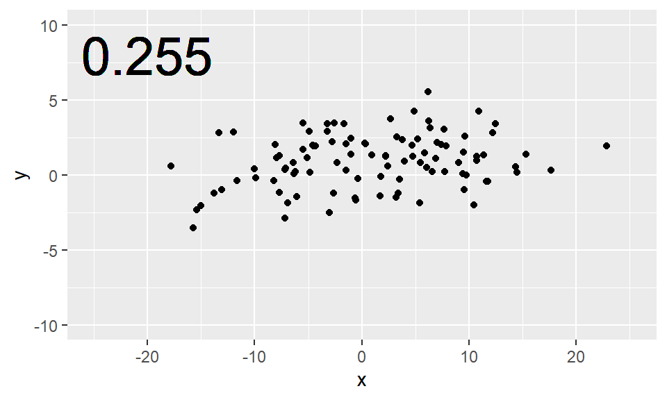
Zero
If there really is no linear relationship between the two variables, then the correlation coefficient will be close to zero. This scatterplot shows two variables that are relatively uncorrelated. Note how knowing one of the \(x\) values gives you very little information about where the corresponding value of \(y\) will be.
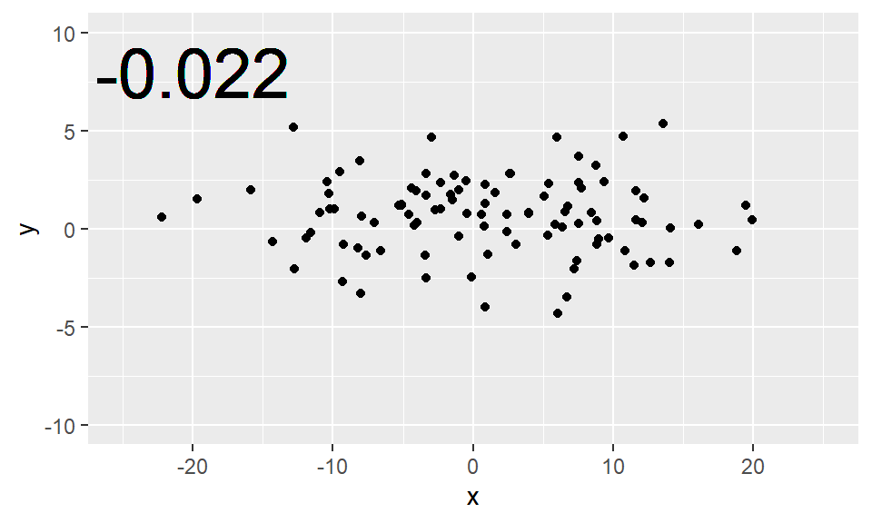
Negative
Alternatively, when the direction of the relationship is negative, the value of the correlation coefficient is negative as well.
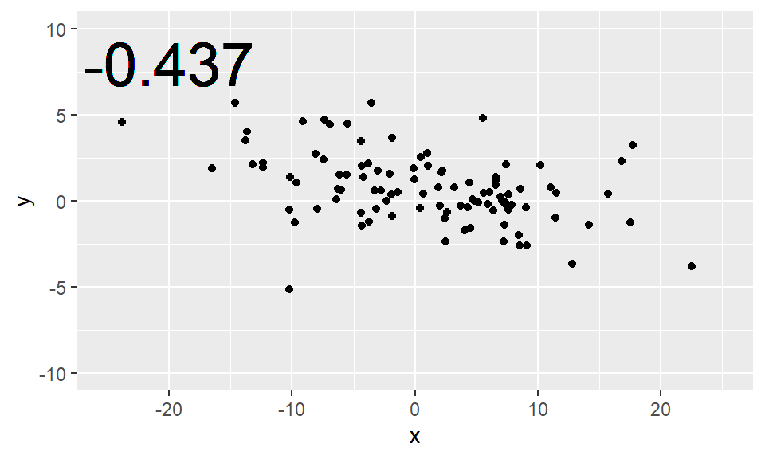
Non-linear relationships
⚠️ Critical Warning: Correlation Measures LINEAR Relationships Only
Before computing any correlation, always create a scatterplot first!
Correlation can be misleading when relationships are curved or non-linear. A low correlation doesn’t necessarily mean “no relationship”—it might mean “no linear relationship.”
It is crucial to remember that the correlation coefficient only captures the strength of the linear relationship between two variables. It is quite common to encounter variables that are strongly-related, but in a non-linear way. Blindly computing and reporting the correlation between such variables does not yield meaningful results.
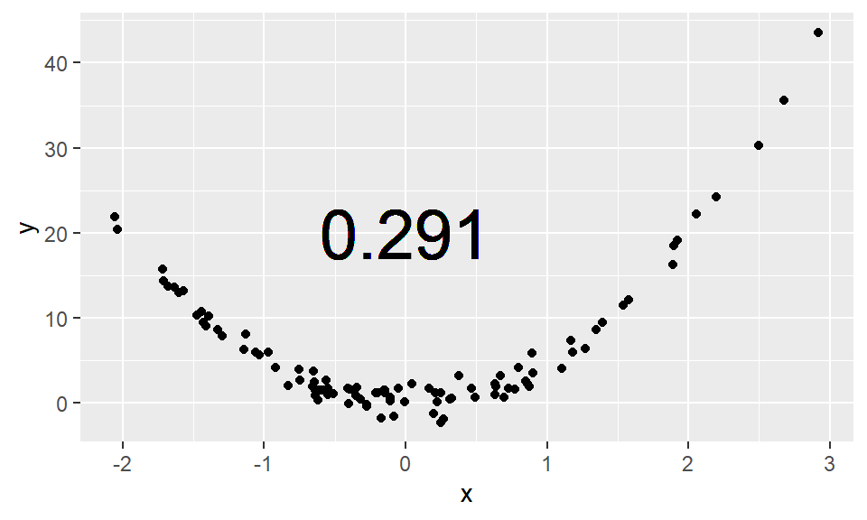
Here, this scatterplot shows a clear, quadratic relationship. To simply interpret the low correlation coefficient as evidence that \(x\) and \(y\) are unrelated would be plainly incorrect. Here, \(x\) and \(y\) are very closely related—just not in a linear fashion.
Non-linear correlation
Here is an example of real data from a 10-mile run. The pace of the top 10 finishers in each age group are plotted against their age. Note how the relationship between the pace and age is non-linear: 25-year-olds tend to actually be faster than 20-year-olds, but as people age beyond their thirties, they tend to get slower. This pattern is present for both men and women.
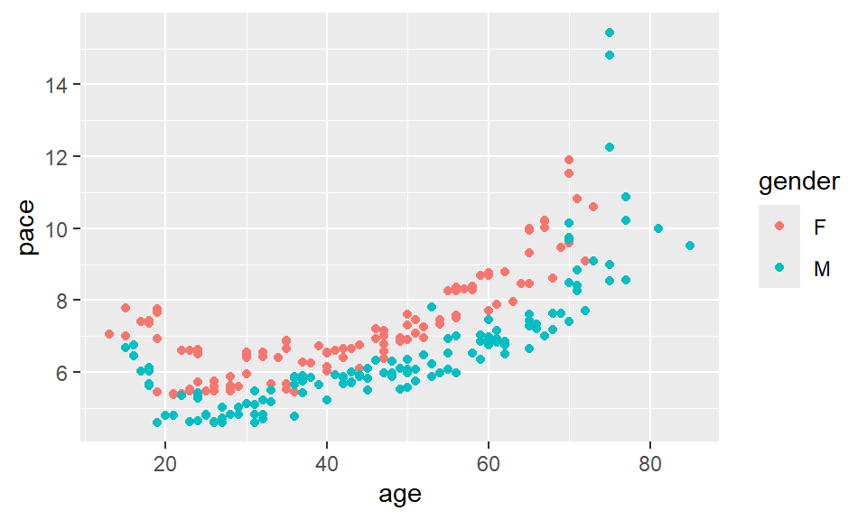
The value of the correlation coefficient here is about 0.718, but we have some intuitive sense that pace and age are more closely-related than the figure indicates.
Calculating the Correlation
There are several different ways that correlation can be defined in statistics, but by far the most common is the Pearson Product-Moment correlation. When we say “correlation” we are talking about this value, but you should be aware that there are other definitions that are preferred in other contexts.
\[ r(x,y) = \frac{Cov(x, y)}{\sqrt{S_{XX} \cdot S_{YY}}} \]
Correlation is most often denoted with the letter \(r\), and it is a function of two variables, most commonly \(x\) and \(y\). The definition in terms of covariance and the sums of squares of \(x\) and \(y\), which we haven’t defined.
Pearson Product-Moment Correlation
This is an alternative definition using only \(x\)’s and \(y\)’s, and their means: \(\bar{x}\) and \(\bar{y}\). In the denominator, we see the sums of the squared deviations in both \(x\) and \(y\). In the numerator, we see a sum of terms involving both \(x\) and \(y\). In fact, each term in the sum is the area of the rectangle with corners at each data point \((x_i, y_i)\) and the means \((\bar{x}, \bar{y})\). So in some sense this is measuring the deviation from the mean in both \(x\) and \(y\).
\[ r(x,y) = \frac{\sum_{i=1}^n (x_i - \bar{x})(y_i - \bar{y})}{\sqrt{\sum_{i=1}^n (x_i - \bar{x})^2 \cdot \sum_{i=1}^n (y_i - \bar{y})^2}} \]
In practice, we always have R do these computations for us, so memorizing the formulas is not important. For some of you, the mathematics may help reinforce your intuition about what the correlation coefficient actually measures. For others, it may simply be a confusing blur of symbols that can be safely ignored. Having a solid conceptual understanding of correlation is the important thing.
You’ll get some more practice computing correlation in the next set of exercises.
Understanding correlation sign
Using R to compute the correlation
The cor() function will compute the Pearson
product-moment correlation between variables, x and
y. Since this quantity is symmetric with respect to
x and y, it doesn’t matter which order you
input the variables.
At the same time, the cor() function is very
conservative when it encounters missing data (e.g. NAs). If
either variable (x or y) has missing values, the cor()
function will output NA.
The use argument allows you to override the default
behavior of returning NA whenever any of the values
encountered is NA. Setting the use argument to
"pairwise.complete.obs" allows cor() to
compute the correlation coefficient for those observations where the
values of x and y are both not missing.
In this exercise, you will use cor() to compute the
correlation between the birthweight of babies (weight) in
the ncbirths dataset and their mother’s age
(mage). There is no missing data in either variable, so you
can use the plain cor() function to do this.
Then, you will use cor() to compute the correlation
between the birthweight (weight) and the number of weeks of
gestation (weeks) for all non-missing pairs of
observations
# Compute correlation of birthweight and mother's age
ncbirths |>
summarize(N = n(),
r = cor(___, ___))
# Compute correlation of birthweight and gestation for all non-missing pairs
ncbirths |>
summarize(N = n(),
r = cor(___, ___, use = ___))ncbirths |>
summarize(N = n(),
r = cor(weight, mage))ncbirths |>
summarize(N = n(),
r = cor(___, ___, use = "pairwise.complete.obs"))# Compute correlation
ncbirths |>
summarize(N = n(),
r = cor(weight, mage))
# Compute correlation for all non-missing pairs
ncbirths |>
summarize(N = n(),
r = cor(weight, weeks, use = "pairwise.complete.obs"))Beyond Pearson: Other Correlation Measures
When Pearson Isn’t Enough
So far, we’ve focused on the Pearson correlation coefficient, which measures linear relationships between two continuous variables. But what if your data doesn’t meet the assumptions for Pearson correlation? What if the relationship is monotonic but not linear?
Fortunately, statisticians have developed alternative correlation measures for these situations.
Meet the Alternatives
There are two commonly used alternatives to Pearson correlation:
- Spearman’s rho (ρ) - Also called Spearman’s rank correlation
- Kendall’s tau (τ) - Also called Kendall’s rank correlation
Both of these are rank-based correlation measures, meaning they work with the ranks (ordering) of the data rather than the actual values.
How They Work: A Simple Example
Consider these five data points:
# Create a simple dataset
example_data <- data.frame(
x = c(1, 2, 3, 4, 5),
y = c(2, 4, 6, 8, 10)
)
example_dataPearson correlation uses the actual values: 1, 2, 3, 4, 5 and 2, 4, 6, 8, 10.
Spearman and Kendall first convert to ranks:
- x ranks: 1st, 2nd, 3rd, 4th, 5th
- y ranks: 1st, 2nd, 3rd, 4th, 5th
Then they measure the correlation between these ranks.
Why Use Rank-Based Correlations?
Advantage 1: Robust to outliers
Imagine you’re measuring the relationship between study hours and exam scores:
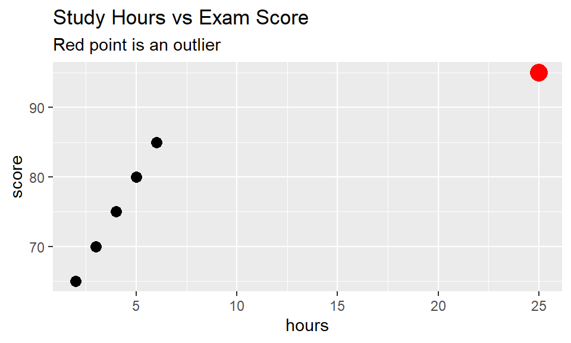
study_data |>
summarize(
Pearson = cor(hours, score),
Spearman = cor(hours, score, method = "spearman"),
Kendall = cor(hours, score, method = "kendall")
)Notice how the outlier (25 hours) affects Pearson more than the rank-based methods. Why? Because rank-based methods only care that 25 is the highest value, not how much higher it is.
Advantage 2: Works with monotonic (but non-linear) relationships
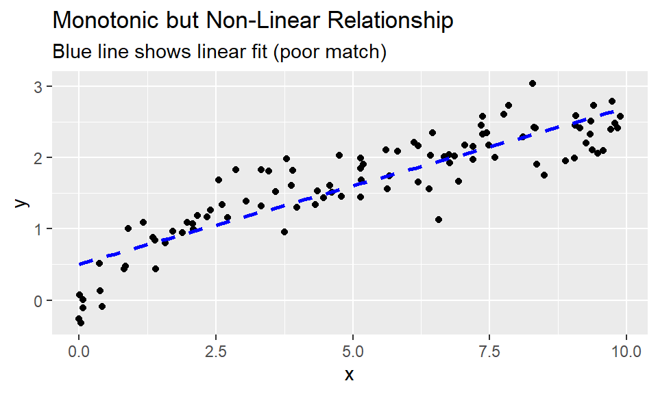
monotonic_data |>
summarize(
Pearson = cor(x, y),
Spearman = cor(x, y, method = "spearman"),
Kendall = cor(x, y, method = "kendall")
)The relationship is clearly strong and monotonic (always increasing), but because it’s curved, Pearson underestimates the strength. Spearman and Kendall capture it better because they only care about the order of values, not the exact shape of the curve.
Comparing the Three Methods
| Feature | Pearson | Spearman | Kendall |
|---|---|---|---|
| Type of data | Continuous | Ordinal or continuous | Ordinal or continuous |
| Measures | Linear association | Monotonic association | Concordance |
| Sensitive to outliers? | Yes | No | No |
| Handles non-linear relationships? | No | Yes (if monotonic) | Yes (if monotonic) |
| Range | -1 to 1 | -1 to 1 | -1 to 1 |
| Computation speed | Fast | Moderate | Slower |
| Best for | Linear relationships with no outliers | Monotonic relationships, ordinal data | Small samples, lots of tied ranks |
Spearman vs. Kendall: Which Rank Correlation?
Both measure monotonic relationships, but they differ in how they calculate correlation from ranks:
Spearman’s rho:
- Applies Pearson’s formula to the ranks
- Equivalent to: “What’s the Pearson correlation if I rank my data first?”
- More commonly used
- More powerful than tau (better at detecting “significant” relationships)
Kendall’s tau:
- Based on counting concordant vs. discordant pairs
- Two observations are concordant if they’re ordered the same way in both variables
- More robust with small samples
- Better when you have many tied ranks
- Has a more intuitive interpretation related to probability
Understanding Kendall’s Tau
Kendall’s tau has a nice interpretation:
τ = (proportion of concordant pairs) - (proportion of discordant pairs)
For example, if τ = 0.6, it means:
- 80% of pairs are concordant (ordered the same way)
- 20% of pairs are discordant (ordered oppositely)
- 0.6 = 0.8 - 0.2
When to Use Each Method
Use Pearson when:
- Both variables are continuous
- The relationship is linear
- Data is approximately normally distributed
- No major outliers
Use Spearman when:
- One or both variables are ordinal
- The relationship is monotonic but not linear
- You have outliers
- You want a rank-based alternative that’s widely recognized
Use Kendall when:
- You have a small sample size
- You have many tied ranks
- You want the probability interpretation
- Computing time isn’t an issue
Your Turn: Comparing Correlation Methods
Let’s revisit the mammals data, where we saw a
non-linear relationship between body weight and brain weight.
# Create scatterplot
ggplot(data = mammals, aes(x = body_wt, y = brain_wt)) +
geom_point() +
labs(title = "Mammal Body Weight vs Brain Weight",
x = "Body Weight (kg)",
y = "Brain Weight (g)")Now compute all three correlation coefficients:
# Compare correlation methods
mammals |>
summarize(
N = n(),
Pearson = cor(body_wt, brain_wt),
Spearman = cor(___, ___, method = "spearman"),
Kendall = cor(___, ___, method = "kendall")
)mammals |>
summarize(
N = n(),
Pearson = cor(body_wt, brain_wt),
Spearman = cor(body_wt, brain_wt, method = "spearman"),
Kendall = cor(body_wt, brain_wt, method = "kendall")
)Practice: Ordinal Data
Rank-based correlations are especially useful for ordinal (ordered categorical) data. Imagine a survey where students rate their satisfaction with a course (1 = Very Unsatisfied to 5 = Very Satisfied) and their expected grade (A, B, C, D, F).
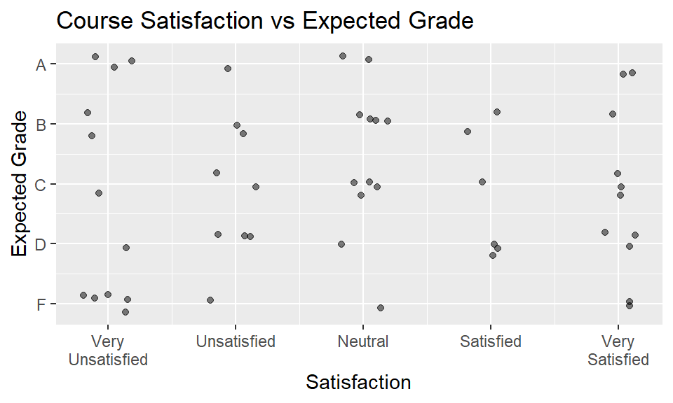
Compute the correlation:
# For ordinal data, rank-based methods are more appropriate
survey |>
summarize(
N = n(),
Pearson = cor(satisfaction, grade_code),
Spearman = cor(satisfaction, grade_code, method = ___),
Kendall = cor(satisfaction, grade_code, method = ___)
)survey |>
summarize(
N = n(),
Pearson = cor(satisfaction, grade_code),
Spearman = cor(satisfaction, grade_code, method = "spearman"),
Kendall = cor(satisfaction, grade_code, method = "kendall")
)survey |>
summarize(
N = n(),
Pearson = cor(satisfaction, grade_code),
Spearman = cor(satisfaction, grade_code, method = "spearman"),
Kendall = cor(satisfaction, grade_code, method = "kendall")
)Quick Quiz
Key Takeaways: Alternative Correlations
✓ Pearson measures linear relationships (continuous data) ✓ Spearman measures monotonic relationships (ordinal or continuous data) ✓ Kendall also measures monotonic relationships with better properties for small samples ✓ Rank-based methods (Spearman, Kendall) are robust to outliers ✓ For ordinal data (like survey responses), always use rank-based methods ✓ When in doubt, compute all three and understand why they differ!
In R:
cor(x, y)→ Pearson (default)cor(x, y, method = "spearman")→ Spearman’s rhocor(x, y, method = "kendall")→ Kendall’s tau
The Anscombe dataset
Anscombe
In 1973, statistician Francis Anscombe created a synthetic data set that has been used extensively to illustrate concepts related to correlation and regression.
These four datasets are famous in statistics because they demonstrate
why visualization must always accompany numerical
summaries. Each has: - Same number of points (n = 11) - Same
mean of x and y - Same standard deviation of x and y
- Same correlation (r = 0.82) - Same regression line
Yet they tell completely different stories!

Here we see four datasets, each having a very different graphical presentation. However, these datasets have the same number of points, the same mean and standard deviation in both \(x\) and \(y\), the same correlation, and the same regression line. How is it possible that four datasets with such obvious visual differences could have so many identical important properties?
The first set looks the most like “real data.” Here we see a positive, linear, moderately strong relationship. As you gain experience working with real data, you will see lots of scatterplots that look similar to this one. Here, the correlation coefficient of 0.82 is giving us an accurate measurement of the strength of the linear relationship between \(x\) and \(y\).
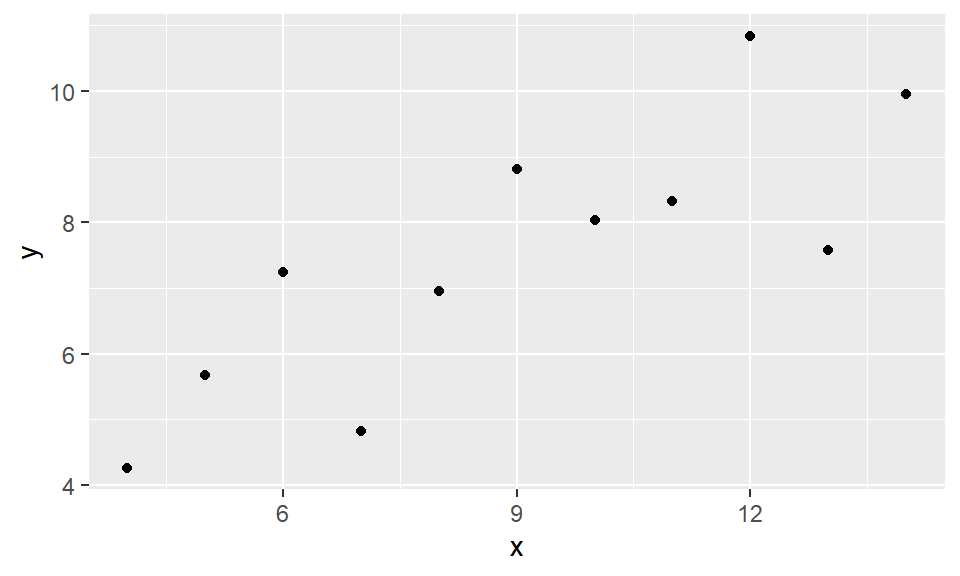
However, in the next set we see something quite different. The relationship here is clearly non-linear. But note also that while the value of the correlation coefficient is 0.82, the correlation—in an intuitive sense—is perfect. That is, knowing the value of \(x\) tells you the value of \(y\) exactly—there is no statistical noise. It’s just that the relationship is not linear.
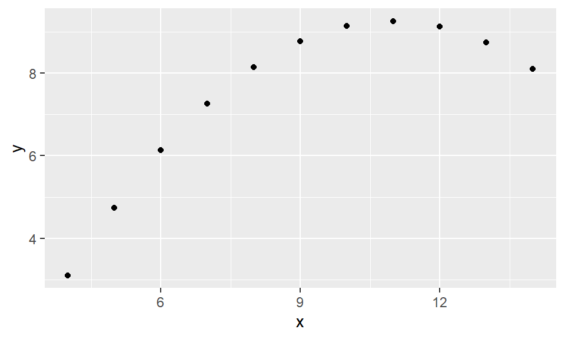
In the third data set, we have an outlier. Here again, our eyes tell us that with the exception of the outlier, the correlation between \(x\) and \(y\) is perfect, and in this case, it is linear. However, the presence of the outlier has lowered the value of the correlation coefficient, and (as you will learn later) the slope of the regression line.
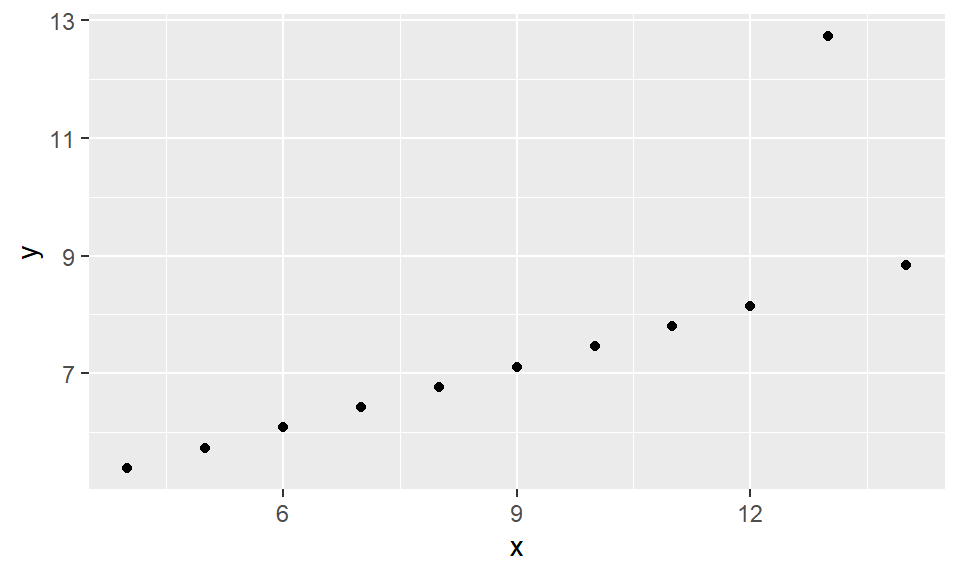
Finally, in the fourth data set we see a pathological example with almost the opposite problem. In the previous plot, we saw that the presence of a single outlier had lowered the correlation from 1 to 0.82. In this plot, the presence of a single outlier raises the correlation from undefined to 0.82. Note that here, with the exception of the outlier, knowing \(x\) doesn’t tell you anything about \(y\). It is only the outlier that gives you the appearance of a correlation, but that correlation is very spurious!
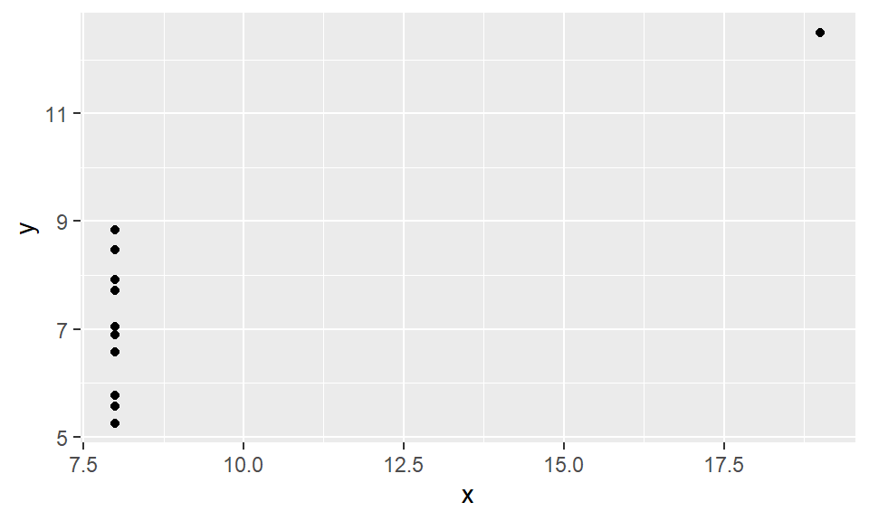
The Anscombe datasets are fabricated, but they help to illustrate some properties of correlation. Above all else, these examples help to underscore the importance of visually inspecting your data! You never know what you are going to see.
Now it’s your turn to explore the Anscombe data set.
Your turn!
In 1973, Francis Anscombe famously created four datasets with
remarkably similar numerical properties, but obviously different graphic
relationships. The anscombe dataset contains the
x and y coordinates for these four datasets,
along with a grouping variable, set, that distinguishes
which quartet the observations belong to (e.g. 1, 2, 3, or 4).
It may be helpful to remind yourself of the graphic relationship by viewing the four scatterplots:
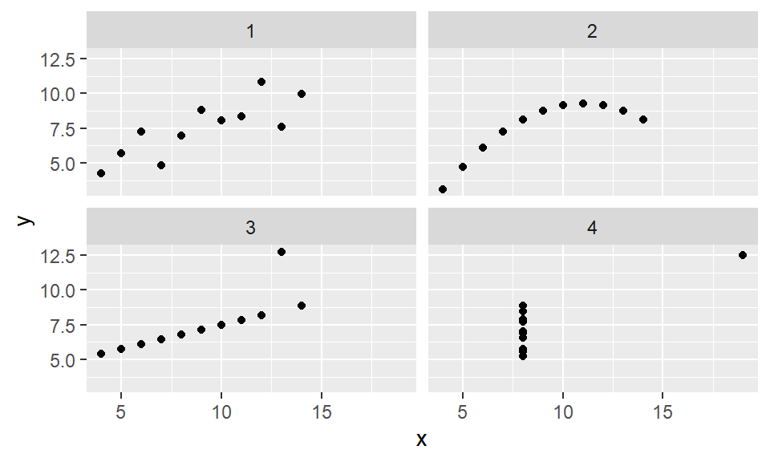
For each of the four sets of data points in the
anscombe dataset, compute the following in the order
specified. Names are provided in your call to
summarize().
- Number of observations,
N - Mean of
x - Standard deviation of
x - Mean of
y - Standard deviation of
y - Correlation coefficient between
xandy
# Compute properties of anscombe
anscombe |>
group_by(___) |>
summarize(
N = ___,
mean_of_x = ___,
std_dev_of_x = ___,
mean_of_y = ___,
std_dev_of_y = ___,
correlation_between_x_and_y = ___
) anscombe |>
group_by(set) |>
... anscombe |>
group_by(set) |>
summarize(
N = n(),
...
) anscombe |>
group_by(set) |>
summarize(
N = n(),
mean_of_x = mean(x),
...
)# Compute properties of anscombe
anscombe |>
group_by(set) |>
summarize(
N = n(),
mean_of_x = mean(x),
std_dev_of_x = sd(x),
mean_of_y = mean(y),
std_dev_of_y = sd(y),
correlation_between_x_and_y = cor(x, y)
)Developing Your Correlation Intuition
Research shows that people often struggle to accurately estimate correlation from scatterplots. Factors like axis scales and point density can influence perception.
Your challenge: For each plot below, estimate the correlation before computing it. This will help calibrate your intuition!
Estimation guide:
- Near 0: Points form a cloud with no clear direction
- ±0.3: Weak pattern, lots of scatter
- ±0.5-0.7: Moderate pattern, clear but scattered
- ±0.8-0.9: Strong pattern, points follow a tight line
- ±1.0: Perfect linear relationship
Perception of correlation
Recall the scatterplot between the poverty rate of counties in the United States and the high school graduation rate in those counties from the previous lesson.

Estimating the value of the correlation coefficient between two quantities from their scatterplot can be tricky. Statisticians have shown that people’s perception of the strength of these relationships can be influenced by design choices like the x and y scales. Nevertheless, with some practice your perception of correlation will improve.
We are going to recreate scatterplots from the previous tutorial, jot down your best estimate of the value of the correlation coefficient between each pair of variables, and compare these values to the actual values you compute.
First, we will start with the relationship between obp
and slg for all players in the mlbbat10
dataset.
# Run this and look at the plot
ggplot(data = mlbbat10, aes(x = obp, y = slg)) +
geom_point()# Find the correlation for all baseball players
___ |>
summarize(N = ___, r = cor(___, ___))mlbbat10 |>
summarize(N = ___, r = cor(___, ___))mlbbat10 |>
summarize(N = n(), r = cor(___, ___))mlbbat10 |>
summarize(N = n(), r = cor(obp, slg))Next, let’s look at the plot of the filtered mlbbat10
data, with only the players with at least 200 at-bats.
# Run this and look at the plot
mlbbat10 |>
filter(at_bat > 200) |>
ggplot(aes(x = obp, y = slg)) +
geom_point()# Correlation for all players with at least 200 ABs
___ |>
filter(___) |>
summarize(N = ___, r = cor(___, ___))mlbbat10 |>
filter(___) |>
summarize(N = ___, r = cor(___, ___))mlbbat10 |>
filter(at_bat >= 200) |>
summarize(N = n(), r = cor(, ___))mlbbat10 |>
filter(at_bat >= 200) |>
summarize(N = n(), r = cor(obp, ___))mlbbat10 |>
filter(at_bat >= 200) |>
summarize(N = n(), r = cor(obp, slg))Next, using the bdims dataset, draw the plot then
calculate the correlation between height (hgt) and weight
(wgt) separately for each sex.
# Run this and look at the plot
ggplot(data = bdims, aes(x = hgt, y = wgt, color = as.factor(sex))) +
geom_point()
# Correlation of body dimensions
___ |>
group_by(___) |>
summarize(N = ___,
r = cor(___, ___))bdims |>
group_by(___) |>
summarize(N = ___,
r = cor(___, ___))bdims |>
group_by(sex) |>
summarize(N = ___,
r = cor(___, ___))bdims |>
group_by(sex) |>
summarize(N = n(),
r = cor(___, ___))bdims |>
group_by(sex) |>
summarize(N = n(),
r = cor(hgt, wgt))Finally, draw the plot then calculate the correlation between body
weight (body_wt) and brain weight (brain_wt)
for all species of mammals. Alongside this computation,
compute the correlation between the same two quantities after taking
their natural logarithms (using the log() function).
# Run this and look at the plot
ggplot(data = mammals, aes(x = body_wt, y = brain_wt)) +
geom_point() +
scale_x_log10() +
scale_y_log10()
# Correlation among mammals, with and without log
___ |>
summarize(N = ___,
r = cor(___, ___),
r_log = cor(log(___), log(___)))mammals |>
summarize(N = ___,
r = cor(___, ___),
r_log = cor(log(___), log(___)))mammals |>
summarize(N = n(),
r = cor(body_wt, brain_wt),
r_log = cor(log(___), log(___)))mammals |>
summarize(N = n(),
r = cor(body_wt, brain_wt),
r_log = cor(log(___), log(___)))mammals |>
summarize(N = n(),
r = cor(body_wt, brain_wt),
r_log = cor(log(body_wt), log(brain_wt)))Interpretation of Correlation
Correlation ≠ Causation
This is perhaps the most important lesson in statistics. Just because two variables move together doesn’t mean one causes the other.
Three possible explanations for correlation: 1. X
causes Y 2. Y causes X
3. A third variable (confounder) causes both X and Y 4. Pure
coincidence
We need experimental data (not just observational data) to establish causation.
Exercise and Beer
The word “correlation” has both a precise mathematical definition and a more general definition for typical usage in English. While these uses of the word are obviously related and generally in sync, there are times when these two uses can be conflated and/or misconstrued. This occurs frequently in the media when journalists write about scientific results—particularly in health-related studies.
For example, consider the following article from the New York Times about the connection between exercise and drinking beer.

After discussing some relatable scenarios, the lead-in raises the question of causation: “But whether exercise encourages people to drink and, likewise, whether drinking encourages people to exercise has been in dispute.”
Exercise and Beer (cont’d)
But causation is not really the goal here. Notice how in the next two paragraphs, verbs linking exercise and beer-drinking include: “influence”, “affect”, and “tend to”. The “interplay between” the two activities is also mentioned.

In the end, this article is worded fairly carefully. Although many different possible connections between exercising and drinking are explored, the author has taken steps not to imply that the research demonstrates that exercising causes one to drink, nor that drinking causes one to exercise. The best interpretation is quoted from the actual study: “people drank more than usual on the same days that they engaged in more physical activity than usual.”
Note how this statement makes it clear that an association was observed, but does not try to imply causality.
In observational studies–which are especially common in nutritional science, health, and epidemiology–one must always be careful not to erroneously suggest that correlation implies causation.

NFL arrests
Here is another interesting use of correlation from the New York Times. The article examines the arrest records of National Football League players, and considers whether certain franchises tend to have more or fewer players arrested consistently over time. This use of correlation—often called serial correlation or autocorrelation—checks to see whether a single numeric variable is highly correlated with past measurements of itself.

From the plot and the reported 0.53 correlation, we see some evidence that the number of players arrested from each team during the seven-year period from 2000 to 2006 was positively associated with the number of players arrested by that same team during the subsequent seven-year period from 2007 to 2013.
NFL arrests (cont’d)
The author interprets both the plot and reported “pretty solid” correlation as evidence of a team-specific effect. Without offering explanations or implying cause-and-effect, the author effectively communicates that player arrests in the NFL do not appear to be randomly distributed across teams, but rather that certain teams may have player-acquisition philosophies that result in them having consistently higher numbers of players arrested.

Correlation vs. Regression
Sometimes journalists can leave statistical concepts lost in translation. The first sentence of this article reports that no correlation was found between economic growth and lower tax rates at the top of the income bracket. This is a politically-sensitive finding, and indeed much of the article discusses attempts by Senate Republicans to bury these findings, which run counter to their ideological position on macroeconomic issues.
Of greater interest to us is that the word “correlation” here is not being used in its precise statistical sense. The link to the actual report reveals that the findings are based on a multiple regression model, not a simple correlation. Multiple regression models are the subject of the next tutorial, but for now, it is enough to know that multiple regression is a technique that extends regression such that more than one explanatory variable can be taken into account. Although you can extend regression to include more than one explanatory variable, this is impossible to do with correlation.
Can you plot a correlation?
Finally, it is not uncommon to encounter references to a “plot” of a correlation. This doesn’t quite make sense. In this tutorial you’ve seen that a scatterplot is a graphical presentation of two variables, and the strength of a linear relationship shown in a scatterplot can be neatly summarized by a correlation. In this case, the article refers to a table of correlations between several variables–often called a correlation matrix–as a “plot” of a correlation.
The authors reached the conclusion that there was no correlation between voting for Brexit and racism, based on the small correlation values. What other evidence would you want to see in order to have confidence in these findings?

Your turn!
The next few exercises will test your ability to interpret correlation like a pro.
Recall that you previously determined the value of the correlation coefficient between the poverty rate of counties in the United States and the high school graduation rate in those counties was -0.6808085.

Correlation and causation
In the San Francisco Bay Area from 1960-1967, the correlation between the birthweight of 1,236 babies and the length of their gestational period was 0.408.
Spurious correlations
What do we mean by spurious?
Spurious correlations occur when two variables appear related but have no meaningful connection. These often result from:
- Confounding by time: Both variables trend upward/downward over time
- Confounding by space: Both variables related to population density
- Random chance: With enough comparisons, some correlations will appear by accident
Your statistical skepticism muscle: Always ask “What else could explain this pattern?”
Above all else, we must always remember that correlation does not imply causation. That is, just because two variables appear to move together does not mean that changes in one are causing changes in the other. There are many potential confounders that can cloud our ability to determine cause-and-effect.
Remarkable–but nonsensical–correlations are called “spurious.” In fact, there is an entire blog devoted to them. Here is how the number of films Nicolas Cage has appeared in correlates with the number of people who drowned by falling into a pool.

Are these two variables related by any substantive means? Of course not.
Spurious over time
Here is another example that traces U.S. oil production to the quality of rock music. We suppose one may need to burn the midnight oil to make a truly endearing rock classic!

In each of these cases, the correlation was illustrated as two variables that seem to move together over time. In fact, time is an obvious confounder for many of these spurious correlations. Any time you see two variables linked over time, you should be skeptical of the role that time can play as a confounder.
Spurious over space
This webcomic from XKCD illustrates how space can also be present in spurious correlations. Colored maps–called choropleths–can be visually arresting ways of conveying information, but they can also reveal spurious correlations. Many things occur more often in places where there are more people, so failure to control for the confounding influence of population can lead to spurious correlations.

Spurious for whatever reason
In other cases it may not be so obvious what confounding variables are driving the spurious correlation. This plot shows that as the number of lemons imported into the U.S. from Mexico has increased over time, the number of U.S. highway fatalities has decreased. The relationship appears to be strong, but there is no plausible causative mechanism that could explain the relationship.

Now it’s time for you to get your hands dirty with some truly spurious correlations.
Your turn!
Statisticians must always be skeptical of potentially spurious correlations. Human beings are very good at seeing patterns in data, sometimes when the patterns themselves are actually just random noise. To illustrate how easy it can be to fall into this trap, we will look for patterns in truly random data.
The noise dataset contains 20 sets of x and
y variables drawn at random from a standard normal
distribution. Each set, denoted as z, has 50
x, y pairs. A preview of the
noise dataset is shown below.
glimpse(noise)Rows: 1,000
Columns: 3
$ y <dbl> -1.20706575, 0.27742924, 1.08444118, -2.34569770, 0.42912469, 0.5060…
$ x <dbl> -1.20533342, 0.30146674, -1.53914522, 0.63537072, 0.70295177, -1.905…
$ z <int> 1, 2, 3, 4, 5, 6, 7, 8, 9, 10, 11, 12, 13, 14, 15, 16, 17, 18, 19, 2…We will use these simulated data to explore if any pairs of variables might be meaningfully correlated or if the correlation coefficients close to zero. To do this take the following steps:
- Create a scatterplot that shows the relationship between
xandy, faceted by the set (z).
# Create faceted scatterplot
ggplot(data = noise, aes(x = x, y = y)) +
geom_point() +
___ggplot(data = noise, aes(x = x, y = y)) +
geom_point() +
facet_wrap(~z)- Compute the correlation between each set of
xandy.
# Compute correlations for each dataset
noise_summary <- noise |>
group_by(___) |>
summarize(N = n(),
spurious_cor = cor(___, ___))
noise_summarynoise_summary <- noise |>
group_by(z) |>
summarize(N = n(),
spurious_cor = cor(___, ___))noise_summary <- noise |>
group_by(z) |>
summarize(N = n(),
spurious_cor = cor(x, y))- Identify the datasets that show non-trivial correlation of greater than 0.2 in absolute value.
# Isolate sets with correlations above 0.2 in absolute strength
noise_summary |>
filter(abs(___) > ___)noise_summary |>
filter(abs(spurious_cor) > ___)noise_summary |>
filter(abs(spurious_cor) > 0.2)Adding Correlation Statistics to Plots
The stat_cor() function
While we’ve learned how to calculate correlation coefficients using
cor() and cor.test(), it’s often useful to
display the correlation directly on your scatterplot. The
ggpubr package provides a convenient function called
stat_cor() that adds correlation statistics as text to your
plots.
First, let’s load the package:
library(ggpubr)Basic usage
The stat_cor() function works as an additional layer in
your ggplot() call, similar to how we add
geom_point() or geom_smooth(). Here’s a basic
example using the possum dataset:
ggplot(data = possum, aes(x = tail_l, y = total_l)) +
geom_point() +
geom_smooth(method = "lm", se = FALSE) +
stat_cor()By default, stat_cor() displays the correlation
coefficient (R) and the p-value in the upper left corner of the
plot.
Customizing stat_cor()
You can customize what statistics are displayed and where they appear. Here are some common options:
Choosing which method to display:
# Display Pearson correlation (default)
ggplot(data = possum, aes(x = tail_l, y = total_l)) +
geom_point() +
stat_cor(method = "pearson")
# Display Spearman correlation
ggplot(data = possum, aes(x = tail_l, y = total_l)) +
geom_point() +
stat_cor(method = "spearman")Changing the position:
# Place in bottom right corner
ggplot(data = possum, aes(x = tail_l, y = total_l)) +
geom_point() +
stat_cor(label.x = 42, label.y = 77)The label.x and label.y arguments control
where the text appears. You’ll need to adjust these based on the range
of your data.
Displaying only certain statistics:
# Show only R and p-value
ggplot(data = possum, aes(x = tail_l, y = total_l)) +
geom_point() +
stat_cor(aes(label = paste(..r.label.., ..p.label.., sep = "~`,`~")))
# Show R-squared instead of R
ggplot(data = possum, aes(x = tail_l, y = total_l)) +
geom_point() +
stat_cor(aes(label = paste(..rr.label.., ..p.label.., sep = "~`,`~")))Practical example
Let’s apply this to one of our earlier examples with the
bdims dataset:
ggplot(data = bdims, aes(x = hgt, y = wgt)) +
geom_point(alpha = 0.5) +
geom_smooth(method = "lm", se = FALSE, color = "blue") +
stat_cor(method = "pearson") +
labs(
x = "Height (cm)",
y = "Weight (kg)",
title = "Relationship between Height and Weight"
)Your turn!
Use the mlbbat10 dataset to create a scatterplot of
slugging percentage (slg) versus on-base percentage
(obp) for players with at least 200 at-bats. Include: -
Points - A regression line - The correlation coefficient and p-value
using stat_cor() - Appropriate axis labels
# Filter the data
mlbbat10_filtered <- mlbbat10 |>
filter(at_bat >= 200)
# Create your plot
ggplot(data = ___, aes(x = ___, y = ___)) +
___ +
___ +
___ +
labs(___)mlbbat10_filtered <- mlbbat10 |>
filter(at_bat >= 200)
ggplot(data = mlbbat10_filtered, aes(x = obp, y = slg)) +
geom_point() +
___ +
___mlbbat10_filtered <- mlbbat10 |>
filter(at_bat >= 200)
ggplot(data = mlbbat10_filtered, aes(x = obp, y = slg)) +
geom_point() +
geom_smooth(method = "lm", se = FALSE) +
stat_cor() +
labs(
x = "On-Base Percentage",
y = "Slugging Percentage"
)mlbbat10_filtered <- mlbbat10 |>
filter(at_bat >= 200)
ggplot(data = mlbbat10_filtered, aes(x = obp, y = slg)) +
geom_point(alpha = 0.5) +
geom_smooth(method = "lm", se = FALSE) +
stat_cor(method = "pearson") +
labs(
x = "On-Base Percentage",
y = "Slugging Percentage",
title = "Relationship between OBP and SLG"
)When to use stat_cor()
The stat_cor() function is particularly useful when: -
Creating quick exploratory plots where you want to see the correlation
at a glance - Making presentations where you want correlation
information visible on the plot - Comparing multiple relationships
side-by-side (especially with faceted plots)
However, for formal statistical reports, you should still report the
full results from cor.test(), which provides confidence
intervals and additional statistical information.
Key takeaways
✓ stat_cor() adds correlation statistics directly to
your ggplot ✓ You can customize the method (Pearson, Spearman, Kendall)
✓ Position and displayed statistics are customizable ✓ It’s a
convenience function for visualization, not a replacement for formal
testing
Congratulations!
You have successfully completed this activity. You need to generate a hash for submission, click “Next Topic”, generate the hash, and submit it on Blackboard.
Submit
Check Your Progress
Click the button below to see how many required exercises you have completed.